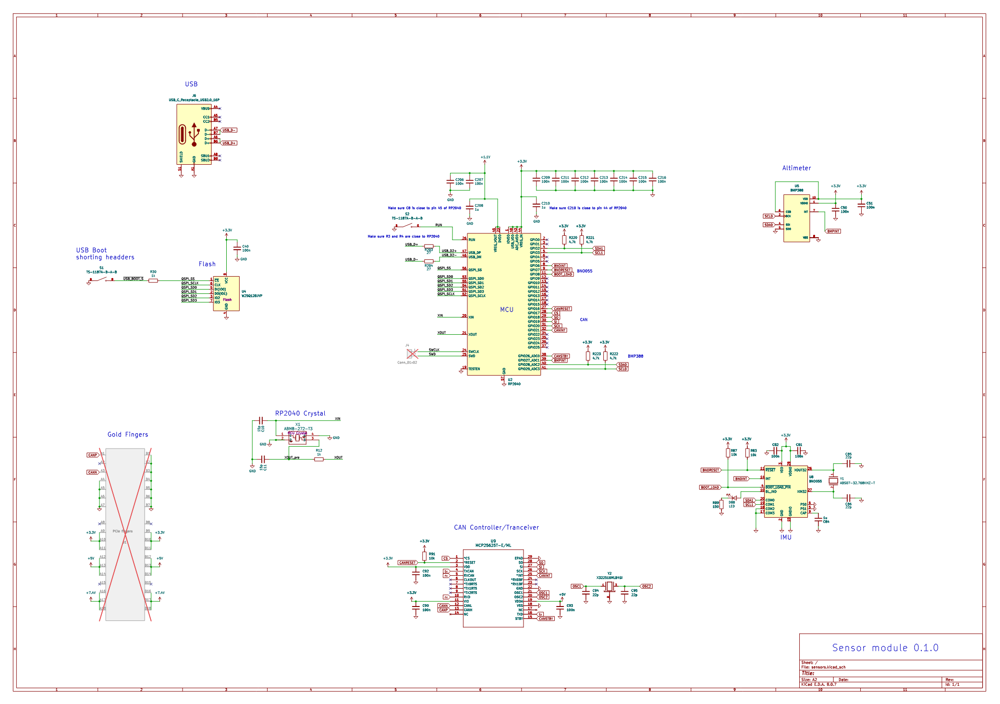
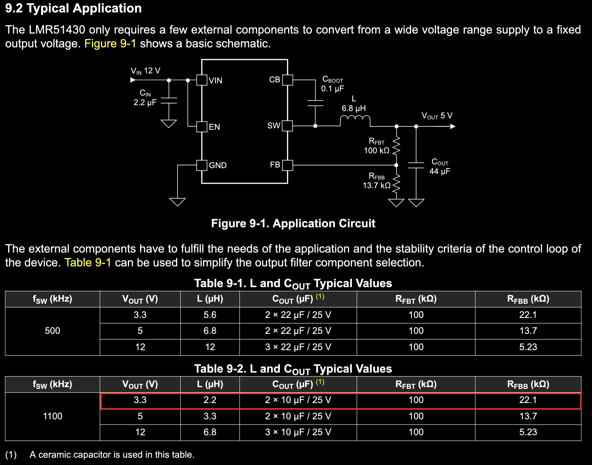

Sensors

Chips
-
MCU
-
MCU RP 2040
-
Flash W25Q128JVP
-
MCU Crystal ABM8-272-T3
-
-
USB-C JLC USB-C port
-
Momentary Button TS-1187A-B-A-B
-
Sensors
-
IMU BNO055
- IMU Crystal ABS07-32.768KHZ-T
-
Altimeter BMP388
-
-
CAN Controller and transceiver
- CAN chip crystal X322516MLB4SI
Notes about chips
3.3v buck
For the 3.3v buck it called for a 22.1kΩ resistor for R_FBB.  22kΩ is a standard resistor. So changing that to 22 will change the output voltage a tad.
For the resistor divider:
Starting from:
Solving for V_OUT:
Subbing in the values:
The voltage ranges for all the chips are as follows
- RP2040: -0.5 to 3.63
- Flash: 2.7 to 3.6
- CAN controller: 2.6 to 5.5
- IMU: -0.3 to 3.6
- Altimeter: -0.3 to 3.8
Running the system at 3.33 volts will be fine, and it will save a lot of money or time.
Point of Load vs Bus Regulation
Point of load regulation is where your power bus is lets say 7.4 volts, and all your chips are 5v so you regulate the voltage near each chip. Bus regulation would be having the bus 5v.
Point of load means multiple regulators at each load, but inherently less stable. If you can get away without having to do point of load regulation you could save a lot of money though.
To reduce costs, both the 5v and the 3.3v regulators will be deleted from the modules, in favour of regulated bus power. Before the power module is ready however, we will need a very basic 2 slot PCIe connector that can supply 5v to the board.
I'll save around $375 buy not doing point of load. Delete the two regs and mux, that gets rid of 5 extended JLCPCB parts. It costs $3 per extended part. The minimum order number is 5 (actually 2 but I'd wanna do 5). There will be 5 modules. 5 * 3 * 5 * 5 = 375.
USB Impedance matching:
From the RP2040 hardware design guide
Even though RP2040 is limited to full speed data rate (12Mbps), we should try and makes sure that the characteristic
impedance of the transmission lines (the copper tracks connecting the chip to the connector) are close to the USB
specification of 90Ω (measured differentially). On a 1mm thick board such as this, if we use 0.8mm wide tracks on
USB_DP and USB_DM, with a gap of 0.15mm between them, we should get a differential characteristic impedance of
around 90Ω. This is to ensure that the signals can travel along these transmission lines as cleanly as possible,
minimising voltage reflections which can reduce the integrity of the signal. In order for these transmission lines to work
properly, we need to make sure that directly below these lines is a ground. A solid, uninterrupted area of ground copper,
stretching the entire length of the track. On this design, almost the entirety of the bottom copper layer is devoted to
ground, and particular care was taken to ensure that the USB tracks pass over nothing but ground. If a PCB thicker than
1mm is chosen for your build, then we have two options. We could re-engineer the USB transmission lines to
compensate for the greater distance between the track and ground underneath (which could be a physical
impossibility), or we could ignore it, and hope for the best. USB FS can be quite forgiving, but your mileage may vary. It is
likely to work in many applications, but it’s probably not going to be compliant to the USB standard.
Since we're using a 4 layer board, I'll use the JLC impedance calculator to get the 90Ω
| info | Value | Reference | Footprint | LCSC Part # | link | basic? | price | Qty |
|---|---|---|---|---|---|---|---|---|
| 100nF Cap | 100n | C5,C7,C9,C11,C12,C13,C14,C15,C16 | Capacitor_SMD:C_0402_1005Metric | nan | nan | nan | nan | 9 |
| 1uF Cap | 1u | C8,C10 | Capacitor_SMD:C_0402_1005Metric | nan | nan | nan | nan | 2 |
| Crystal | ABM8-272-T3 | X1 | crystal:ABM8-272-T3_ABR | C20625731 | https://jlcpcb.com/partdetail/AbraconLlc-ABM8_272T3/C20625731 | no | C$0.6692 | 1 |
| Sensor | BNO055 | U1 | Package_LGA:LGA-28_5.2x3.8mm_P0.5mm | C93216 | https://jlcpcb.com/partdetail/BoschSensortec-BNO055/C93216 | no | C$14.0435 | 1 |
| PCIe fingers | Bus_PCI_Express_x1 | J1 | Connector_PCBEdge:BUS_PCIexpress_x1 | nan | nan | nan | nan | 1 |
| DC-DC Converter | LMR51430 | U6 | Package_TO_SOT_SMD:SOT-23-6 | C5219261 | https://jlcpcb.com/partdetail/TexasInstruments-LMR51430YFDDCR/C5219261 | no | C$1.4952 | 1 |
| CAN Transceiver | MCP2562-E-SN | U5 | Package_SO:SOIC-8_3.9x4.9mm_P1.27mm | C53609 | https://jlcpcb.com/partdetail/MicrochipTech-MCP2562_ESN/C53609 | no | C$12.56 | 1 |
| MCU | RP2040 | U2 | Package_DFN_QFN:QFN-56-1EP_7x7mm_P0.4mm_EP3.2x3.2mm | C2040 | https://jlcpcb.com/partdetail/RaspberryPi-RP2040/C2040 | no | C$1.4190 | 1 |
| MUX | TPS2116DRL | U3 | Package_TO_SOT_SMD:SOT-583-8 | C3235557 | https://jlcpcb.com/partdetail/TexasInstruments-TPS2116DRLR/C3235557 | no | C$0.8959 | 1 |
| USB-C | TYPE-C-31-M-04 | J2 | TYPE-C-31-M-04:HRO_TYPE-C-31-M-04 | C129018 | https://jlcpcb.com/partdetail/Korean_HropartsElec-TYPE_C_31_M04/C129018 | no | C$0.8196 | 1 |
| Flash | W25Q128JVP | U4 | Package_SON:WSON-8-1EP_6x5mm_P1.27mm_EP3.4x4.3mm | C190862 | https://jlcpcb.com/partdetail/WinbondElec-W25Q128JVPIQ/C190862 | no | C$1.0737 | 1 |